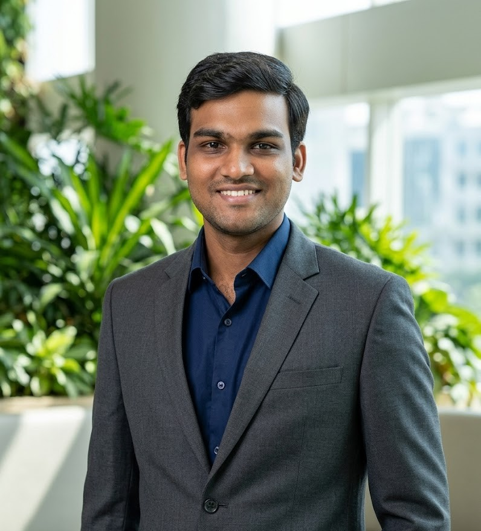

About Me
Hello there!! Mr. Shanmuka Srinivas M is currently a doctoral scholar at the Indian Institute of Technology Tirupati. Currently, he is working as a senior research fellow on the project "Study on Micro-Machining Process for the High Frequency (mm-wave) RF Structure", Sponsored project by MTRDC, DRDO Bengaluru. As a part of his PhD work, he is also working on the post-processing of additively manufactured features. To date, his work has resulted in 1 patent, 18 international journal papers, and 3 papers in the Procedia. He also contributed to 31 international conference presentations (oral), 5 poster presentations and 4 chapters in books.
Download CVResearch Interests
- Fabrication of Super Finishing Tools
- Ultra-precision finishing
- Tribology and Rheology
- Composite Filament Fabrication
- Electrodischarge Machining and Micro-Electrodischarge Machining
- Laser-based manufacturing
- Environmentally Benign Coolants and Lubricants
- Machining of Natural and Ceramic Composites
- Dynamic Chemical Polishing of Additively Manufactured Primitive Lattice Structures
Academic Highlights
- Doctoral research scholar at IIT Tirupati
- 18 peer-reviewed journal publications
- 1 Indian published patent
- International Travel Support from ANRF for ICASS 2026
- Research experience in finishing of additively manufactured metallic surfaces
Accolades / Recognition
- Best poster award: ICAMC-2024, Organised by the Indian Institute of Technology (IIT) Bombay.
- Best paper award: ICAM5-2025, Organised by National Institute of Technology (NIT) Warangal.
- Best paper award: ICFAMMT-2022, Organised by IITRAM and ISRO.
- Fellow of the Indian Academy of Sciences, “Summer research fellowship program - 2018”, Funded by IAS, INSA, NAS, Government of India.
- International Travel Support funded by ANRF for attending an international conference in Chengdu, China.
- National Travel Support funded by the IIT Tirupati for attending 12 conferences across India.
Contact
Email: me20d002@iittp.ac.in and mshanmukasrinivas@gmail.com